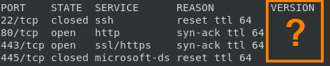

-Pn: no Ping
This option skips the Nmap Ping Sweeping stage altogether and directly do Port Scan
Some servers and ports are protected by
firewalls that block pings but on certain system there are always some ports open.
So if we suspect that there are hosts
protected by firewall against ping sweeping we can skip ping scanning using the option
-Pn of nmap and so scan every machine not only those that respond to pings.
examplenmap -p 22,24,53,80,111,135,139,441,443,445,711,1025,1026,1029 -Pn 192.168.1.0/24
Service Version
or
Service type
are not recognized
• Often is not possible recognize the
version of a service though the port is open
The option --reason give use an explanation of why a port is marked open or closed
• tcpwrapped means that the TCP handshake was completed, but the remote host closed the connection without receiving any data and so the
service is not recognizable In both cases something is blocking connectivity with the target host